유지보수 계약처럼 같은 고객에게 달마다 청구하는 매출을 구독으로 다룹니다. 주문을 확정하면 구독이 생기고, 기간마다 청구서가 자동으로 만들어집니다. 월별 MRR 변화는 원장에서 확인합니다.
무엇을 · 왜#
판매 모듈은 구독을 직접 다루지 않습니다. 정기 청구 주기를 정한 제품의 주문을 확정하면 「주문 확정」 이벤트만 남기고, 구독 모듈이 이벤트를 받아 구독을 만듭니다. 청구서도 구독이 직접 만들지 않습니다. 구독 모듈이 「정기 청구」 이벤트를 남기면 청구 모듈이 이벤트를 받아 청구서를 만듭니다.
| 무엇 | 어떻게 |
|---|---|
| 첫 기간 | 주문의 청구서로 청구합니다. 같은 기간을 두 번 청구하지 않습니다 |
| 다음 기간 | 청구 확인(pg_cron, 앱, 청구 확인 단추)이 매일 확인해 기간마다 청구합니다 |
| 품목 변경 | 저장하면 다음 기간부터 바뀝니다. 지금 적용은 오늘부터 바꾸고 남은 날만큼 차액을 청구하거나 돌려줍니다 |
| 미납 | 만기가 지난 미납 청구가 있으면 「미납」으로 표시합니다. 구독은 멈추지 않습니다 |
| 해지 | 사유를 목록에서 고릅니다. 기간이 끝날 때 해지하려면 종료일을 적습니다 |
| MRR 분석 | 원장으로 그날의 MRR과 월별 신규·확장·축소·해지·재개, 해지율, 순매출 유지율을 계산합니다 |
먼저 알아 둘 것
- 가온가전은 가상 회사이고, 사람·거래처·금액은 모두 가상입니다. 화면은 로컬 Supabase에서 찍었습니다.
- 녹화 전에 판매·청구를 켜고, 구성원 박영업(영업), 정회계(회계), 고객 한빛상사·동아기술, 제품 유지보수 계약 (월)(서비스, 300,000원)을 명령으로 넣었습니다.
- 녹화에서는 넉 달을 보여 주려고 날짜를 앞당겼습니다(2026-08-01 ~ 2026-11-01). 실제로는 청구 확인이 매일 같은 일을 합니다.
- 구독은 청구 모듈이 켜져 있어야 켤 수 있습니다.
따라 하기#
- 구독 켜기. 관리자로 설정 → 모듈에서 구독의 켜기를 누릅니다. 켜기 전의 계약과 청구는 원장에 없다고 알려 줍니다. 정기 청구서를 바로 게시하도록 설정하고 켭니다. 매월·분기마다·매년 세 구독 주기가 생깁니다.
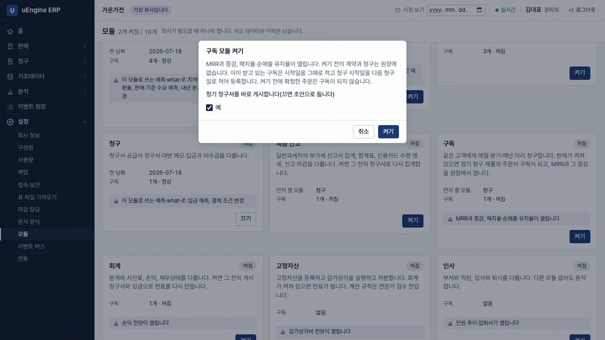
구독 켜기 - 정기 청구 제품. 판매 → 제품에서
유지보수 계약 (월)을 열고 정기 청구 주기를매월로 고릅니다. 이 칸은 구독 모듈이 켜져 있을 때만 보입니다.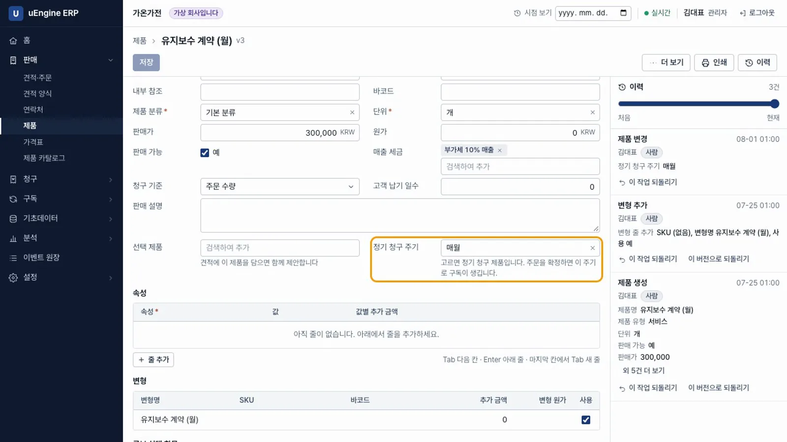
정기 청구 주기 - 주문 확정. 박영업으로 한빛상사의 견적을 만들고
유지보수 계약 (월)1개를 넣어 주문 확정을 누릅니다.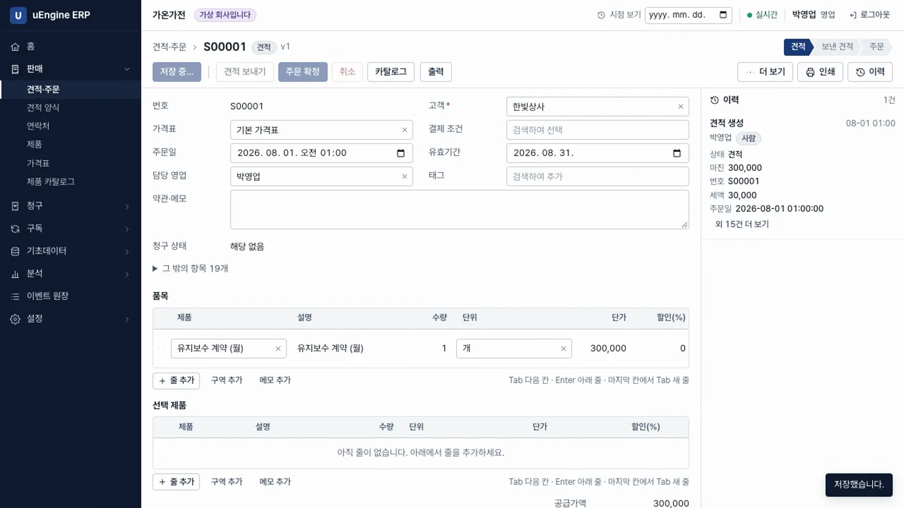
주문 확정 - 구독이 생김. 구독 → 구독에
SB00001이 생겼습니다. 월 반복 매출은 300,000원, 원본 주문은S00001, 다음 청구일은 다음 달 1일입니다. 첫 기간은 「주문에서 청구」로 표시됩니다.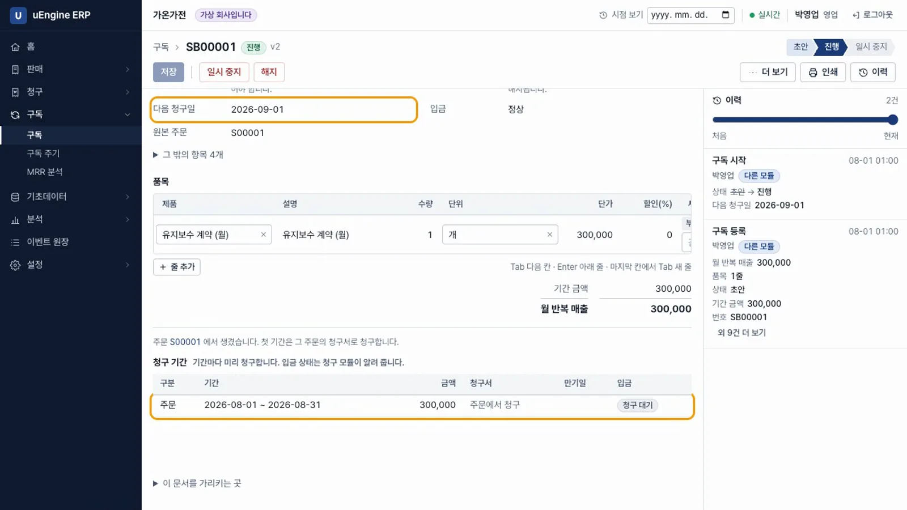
구독 - 첫 기간 입금. 녹화에서는 동아기술의 주문도 확정하고, 정회계가 두 주문의 첫 달 청구서를 게시하고 입금을 기록했습니다. 구독의 첫 기간이 「입금 완료」가 됩니다.
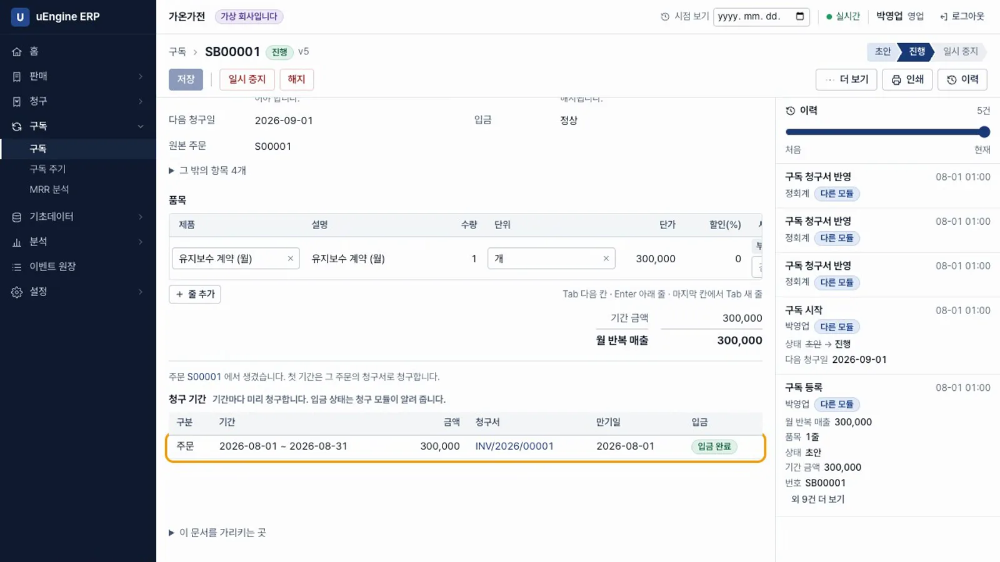
첫 기간 - 다음 달 청구. 다음 달 1일이 되면 청구 확인을 거쳐 청구 모듈이 두 구독의 청구서를 만듭니다. 청구 → 청구서에 2026-09-01자 330,000원(부가세 포함) 청구서 두 장이 원본
SB00001,SB00002로 보입니다.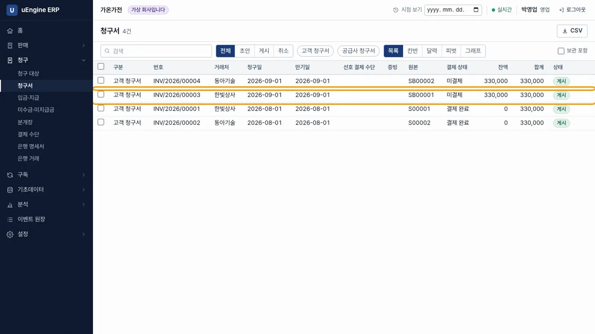
다음 달 청구서 - 수량 늘리기. 보름 뒤 한빛상사 구독의 수량을
3으로 고쳐 저장합니다. 다음 기간부터 바뀌는 내용에다음 청구일 2026-10-01부터 월 반복 매출이 300,000 → 900,000이 보입니다.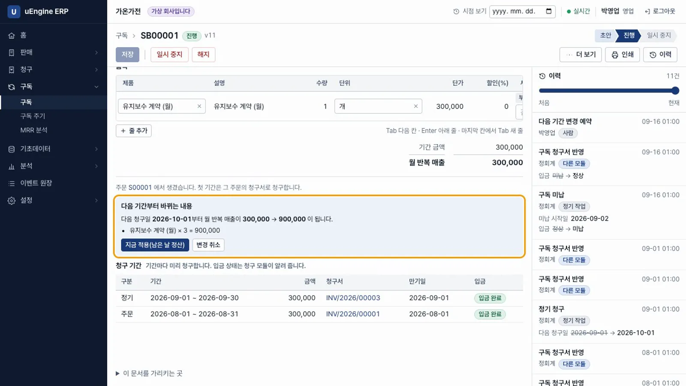
다음 기간 변경 - 지금 적용. 지금 적용(남은 날 정산)을 누르면 오늘부터 수량이 바뀌고, 이번 달 남은 날(2026-09-16 ~ 2026-09-30)만큼 차액 300,000원을 청구합니다. 600,000원 × 15/30으로 계산하며, 마지막에 한 번만 반올림합니다.
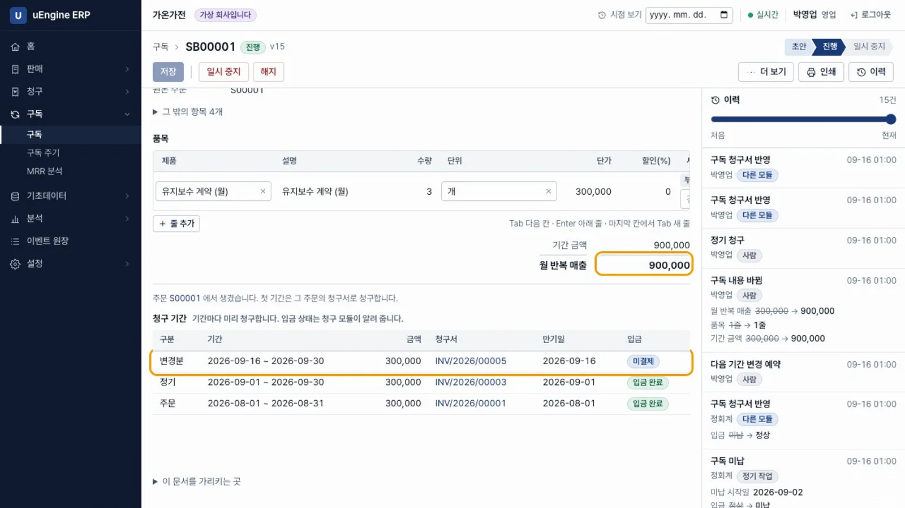
지금 적용 - 미납. 동아기술은 둘째 달 청구액을 내지 않았습니다. 만기가 지나자 구독 목록의
SB00002에 「미납」이 표시됩니다.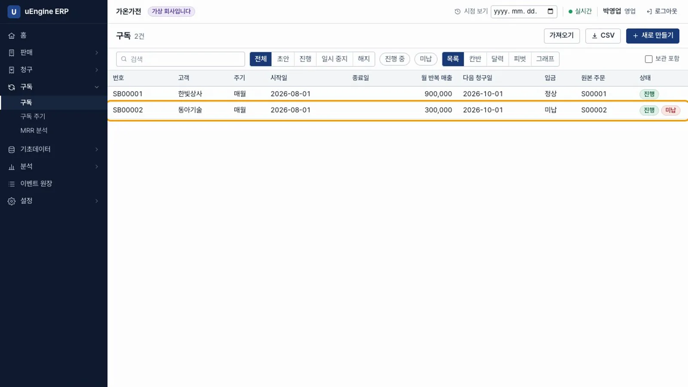
미납 - 셋째 달. 2026-10-01에는 한빛상사에 990,000원, 동아기술에 330,000원을 청구합니다.
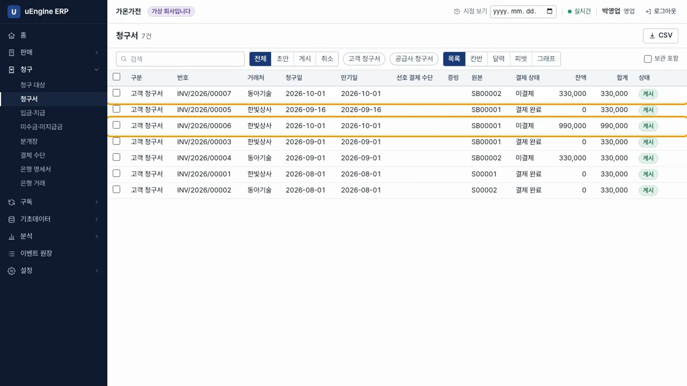
셋째 달 청구서 - 해지. 2026-10-10에 동아기술 구독에서 해지를 누르고 사유
미납을 고릅니다. 기간이 끝날 때 해지하려면 해지 대신 종료일을 적습니다.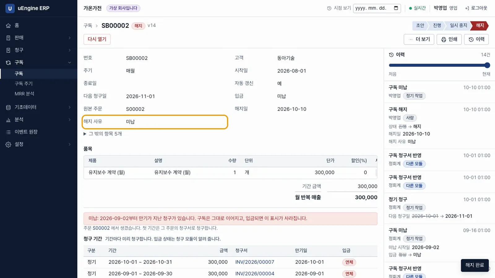
해지 - 넷째 달. 2026-11-01에는 한빛상사에만 990,000원을 청구하며, 청구서는 모두 8장입니다. 청구서마다 그 기간의 첫날이 청구일입니다.
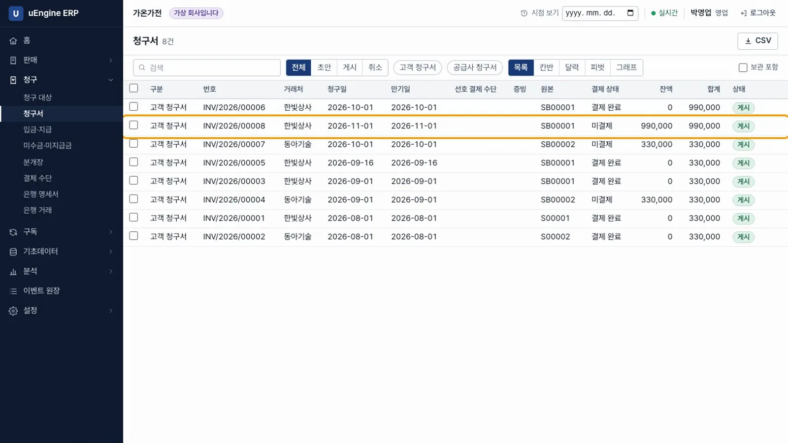
청구서 목록 - MRR 분석. 구독 → MRR 분석을 엽니다. MRR은 900,000원입니다. 8월 신규 600,000원, 9월 확장 600,000원, 10월 해지 300,000원이 막대로 보입니다. 모든 변경이 이벤트로 남으므로 과거 어느 날의 MRR도 원장에서 확인합니다.
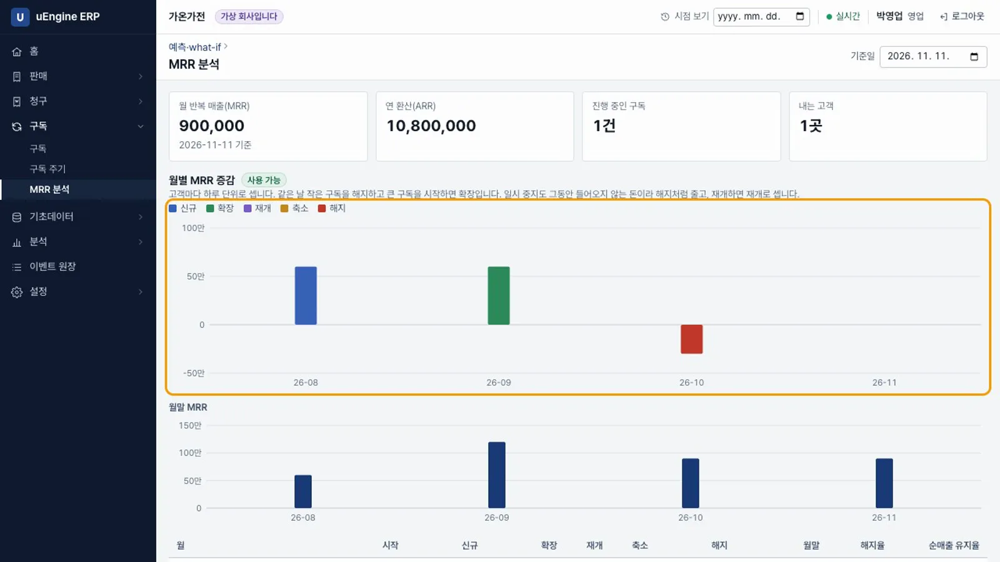
MRR 분석 - 달마다의 표. 아래 표에서 월별 시작, 신규, 확장, 재개, 축소, 해지, 월말, 해지율, 순매출 유지율을 확인합니다. 시작에 신규·확장·재개를 더하고 축소·해지를 빼면 월말이 됩니다. 9월 순매출 유지율은 200.0%, 10월 해지율은 50.0%입니다.
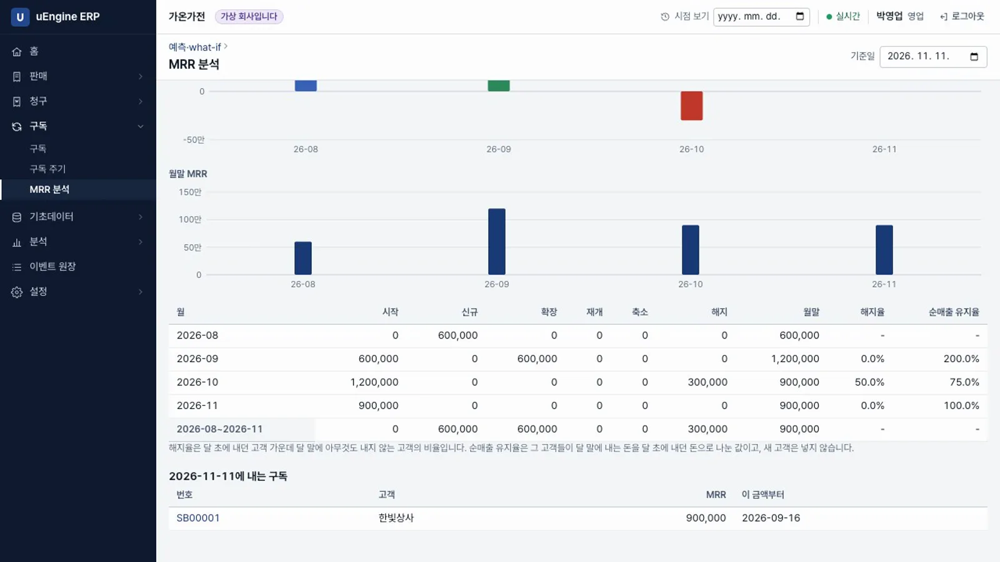
달마다의 표
확인 문제#
판매 모듈은 구독을 어떻게 아나요?
직접 다루지 않습니다. 판매 모듈은 주문 확정 이벤트만 남기고, 구독 모듈이 이벤트를 받아 구독을 만듭니다. 구독을 꺼도 판매는 그대로 동작합니다.
청구 확인을 두 번 눌러도 같은 달이 두 번 청구되나요?
아닙니다. 기간마다 청구 번호가 정해져 있어 같은 기간은 한 번만 청구됩니다. 며칠 멈췄다가 다시 실행하면 밀린 기간을 차례로 청구합니다.
미납이면 구독이 멈추나요?
멈추지 않습니다. 「미납」으로 표시만 하고 다음 기간도 청구합니다. 해지 여부는 담당자가 정합니다.